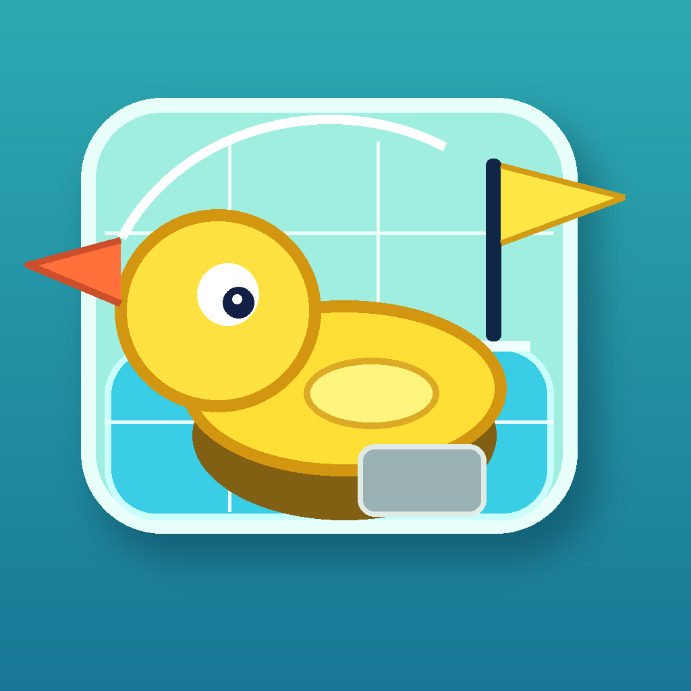

Save Ducky
Save Ducky 帮助
Save Ducky 的核心是水、重力和一只小鸭。目标始终很清楚：把小鸭带到旗帜。
操作
- 向左或向右旋转水箱；在可用的 iPhone 和 iPad 上也可以旋转设备。
- 使用水位按钮升高或排出水。
- 在触控设备上可直接在水箱内拖动设置水位。
- 后续关卡可能出现阀门和塞子，用于更慢速地改变水位。
解谜提示
- 旋转前先观察旗帜、障碍物和当前水位。
- 小幅调整水位通常比把水箱填满更关键。
- 如果小鸭卡住了，重开关卡并先尝试改变旋转方向。

Save DuckySave Ducky
Save Ducky 的核心是水、重力和一只小鸭。目标始终很清楚：把小鸭带到旗帜。